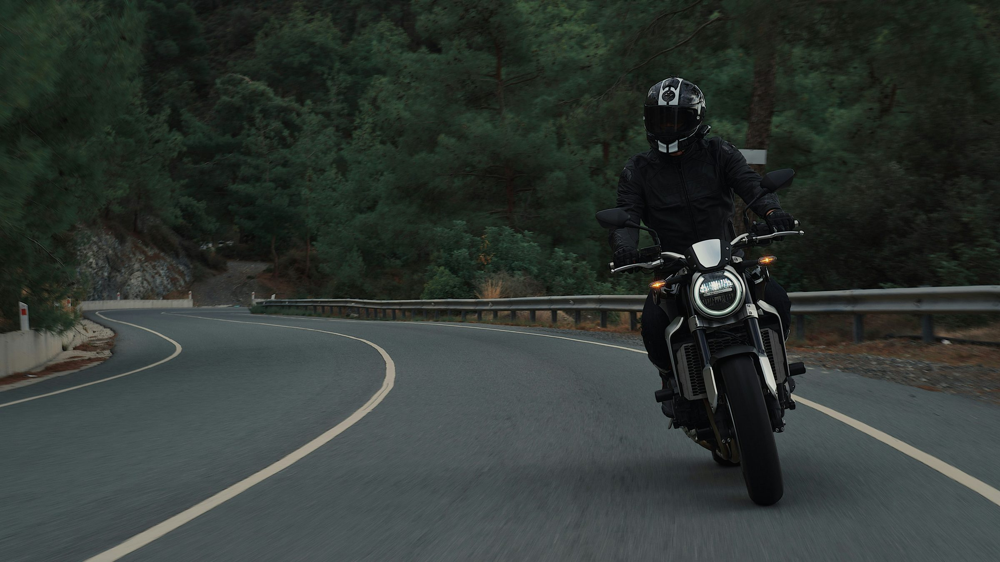

01
Ride
Guides and articles for the road ahead.
Maintenance, repair, buying, PPE, tools, navigation, first aid, packing, terrain, weather, safety, sport and regional history.

Motorcycle knowledge, equipment and support for riders across East Africa.
Ride is the guides library. Market is used bikes, tools and gear. Shop is new spares, accessories, oils, kits, maps, navigation and audio. Workshop is service, inspection and rider recovery, opening soon.
01
Guides and articles for the road ahead.
Maintenance, repair, buying, PPE, tools, navigation, first aid, packing, terrain, weather, safety, sport and regional history.
02
Used two wheelers, tools and biking gear.
Local and used market finds, inspected in person. Bikes plus used tools and bike related goods.
03
New spares, accessories, oils, kits, nav and audio.
Spare parts, rider and bike accessories, oils, kits, maps, navigation systems and audio. Catalogue grows with operations.
04
Service, inspection and rider recovery.
Routine service, diagnostics, pre-route and pre-purchase inspection, plus rider recovery dispatch at opening.

Field 014
Route feature Old Naivasha Road, Kenya 11 AUG 2026
Ninety kilometres from Nairobi to Naivasha on the old road, and why the descent is the only part that matters.
The old escarpment road is shorter, quieter and more interesting than the highway. In April it is also the reason riders end up in the ditch at the third hairpin. Here is how the surface actually behaves once the rain starts.
Read the story
Maintenance, repair, buying, PPE, tools, navigation, first aid, packing, terrain, weather, safety, sport and regional history, from us and from professionals.
The old escarpment road is shorter, quieter and more interesting than the highway. In April it is also the reason riders end up in the ditch at the third hairpin. Here is how the surface actually behaves once the rain starts.
9 min read

A drive chain on dusty roads does not fail from lack of lubricant. It fails from lubricant that has turned into grinding paste. The fix is not more oil, it is a different schedule.
7 min read

Riders who cover two hundred kilometres a day on the same machine develop diagnostic habits that no manual teaches. We spent a week listening rather than explaining.
11 min read
Used two wheelers, used tools and biking related goods from the local and used market. Everything here was inspected in person or is shown as a demo listing. Frontier Moto holds no stock yet and brokers no sales. Notes on condition, not offers. Nothing transacts yet.
Used bike ML-118
Service history present, chain set recent, tyres at half.
Used bike ML-121
Higher mileage, fork seals weeping, otherwise sound.
Used bike ML-124
Working machine, honest wear, priced accordingly.
Used bike ML-127
Low mileage, no local service history, parts lead time is the risk.
Placeholder catalogue for new goods. Spare parts, rider and bike accessories, oils, kits, maps, navigation systems and audio. Categories will be refined as shop operations grow. Nothing for sale yet. Prices are placeholders in Kenya shillings.
SH-01Spare parts
Placeholder. Sizing and stock to be confirmed at opening.
Untested
SH-02Rider accessories
Placeholder. Sizing and stock to be confirmed at opening.
Untested
SH-03Bike accessories
Placeholder. Fitment list to be confirmed at opening.
Untested
SH-04Oils
Placeholder. Brand and spec to be confirmed at opening.
Untested
The workshop handles routine service, diagnostics and pre-route inspections. We work on the machines people actually ride here, which means commuters and working bikes as readily as touring machines. Workshop and rider recovery are opening soon. Nothing is bookable or dispatchable yet. The forms on this page are demonstrations that transmit nothing.

Routine service, pre-route and pre-purchase inspection, diagnostics and suspension, plus rider recovery where a call dispatches the nearest rider. Placeholder contact +254 700 000 000, not answered yet.
Workshop and recovery are opening soon. Booking and dispatch forms are demonstrations.
The signals that come three seconds before a sudden stop, and the following distance that makes them useful.
6 min read
Position, visibility, then the machine. In that order, every time.
5 min read
The order to check things in, so that a fault ends the inspection before you waste an hour.
10 min read
Where the tarmac holds, where it does not, and the last certain fuel before the northern stretch.
6 min read
A sequence that finds the fault without removing anything you do not need to remove.
9 min read
Weight low and forward, and what stays home when space runs out.
6 min read